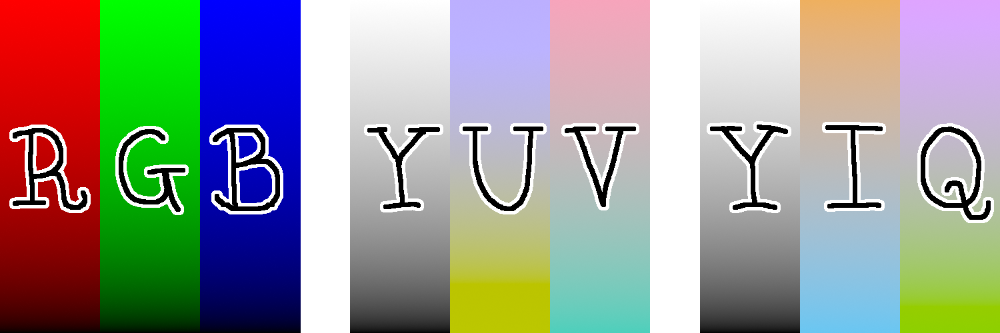
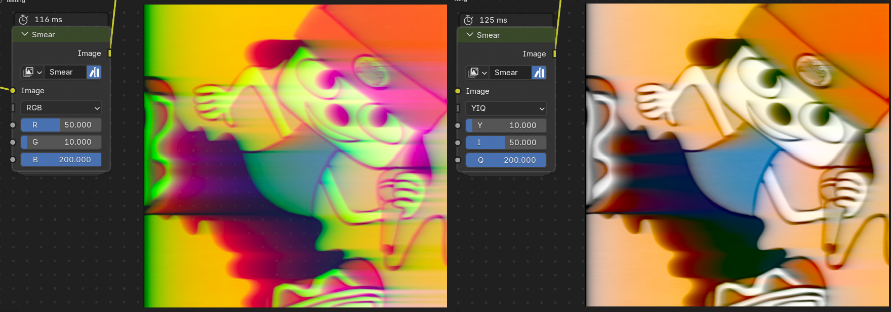
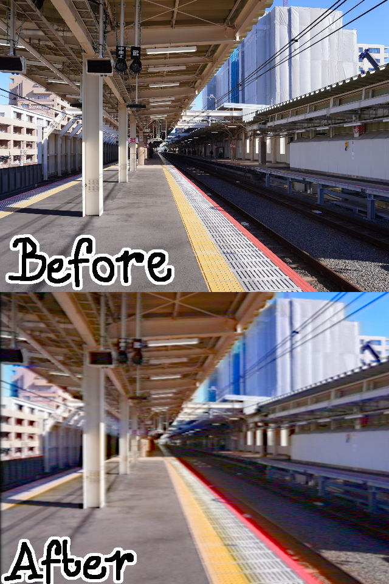

TOTAL YIQ LOVE !!
Analog color television effects in Blender
After making the RETARD ZONE HALLOWEEN 2025 video, for which I used the fantastic software ntsc-rs to fake convincing VHS / CRT footage, I was left with the dissatisfaction of not having made those effects using the Blender compositor. Especially now that the Video editor in Blender supports compositor nodes ! So I knew what I had to do : I decided I was gonna implement those effects in Blender for future use, so that I would not have to rely on external software.
To properly emulate the unique artifacts of analog television I first had to learn how analog color television works. I looked into the north american standard NTSC specifically, but the european equivalent PAL should be similar enough. NTSC uses some very clever trick to maximally use its very limited bandwith to fit in color data while also being backwards compatible with black and white television. I won't discuss or emulate all of them as I do not fully understand it, but a few things are important to know !
CRT Television screens, like most modern displays, create color by mixing three primary colors: red, green, and blue. The NTSC signal however, does not use RGB. The space of colors is three dimensional so we need 3 channels to send full color data. Since this system has to be backward compatible the first channel corresponds to luma or Y (or Y'), which is the percieved brightness of a color. The next two channels convey color information. PAL uses YUV (or Y'UV), where Y' is the luma, U is proportional to B-Y', and V is proportional to R-Y'. This allows for simple recovery of the R, G and B channels for display on a TV screen. NTSC uses a similar space, YIQ, where I and Q are 33-degree-rotated versions of U and V. The 33 degree rotation makes the circuitry to recover R, G and B more complicated, and for that reason a lot of US consumer TV's incorrectly interpreted the signal as YUV instead of YIQ to save cost.
Having luma and color information separately lets us also exploit a quirk of human vision to save bandwith. Our eyes are much more sensitive to changes in brightness compared to changes in color, so we can keep a high resolution on the luma channel and lower the resolution in the color channels without much noticeable loss in image quality. It is thanks to this principle that NTSC can cram color information in the very limited amount of bandwith available.
Applying our subsequent video degradation effects on YUV or YIQ instead of RGB will lead to much more TV-like results:
So far i've added smear, signal noise, sharpening and color adjustments in the YUV / YIQ space as effects, which already get us most of the way there as far as achieving an analog TV look goes. I'd like to add some more effects and maybe some VHS emulation in the future.
Here's an example of all the effects i've made so far in action:
